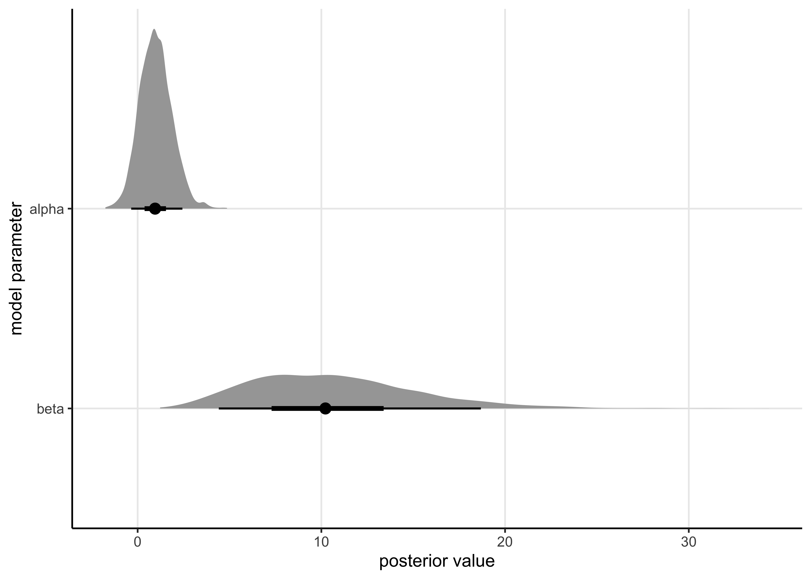
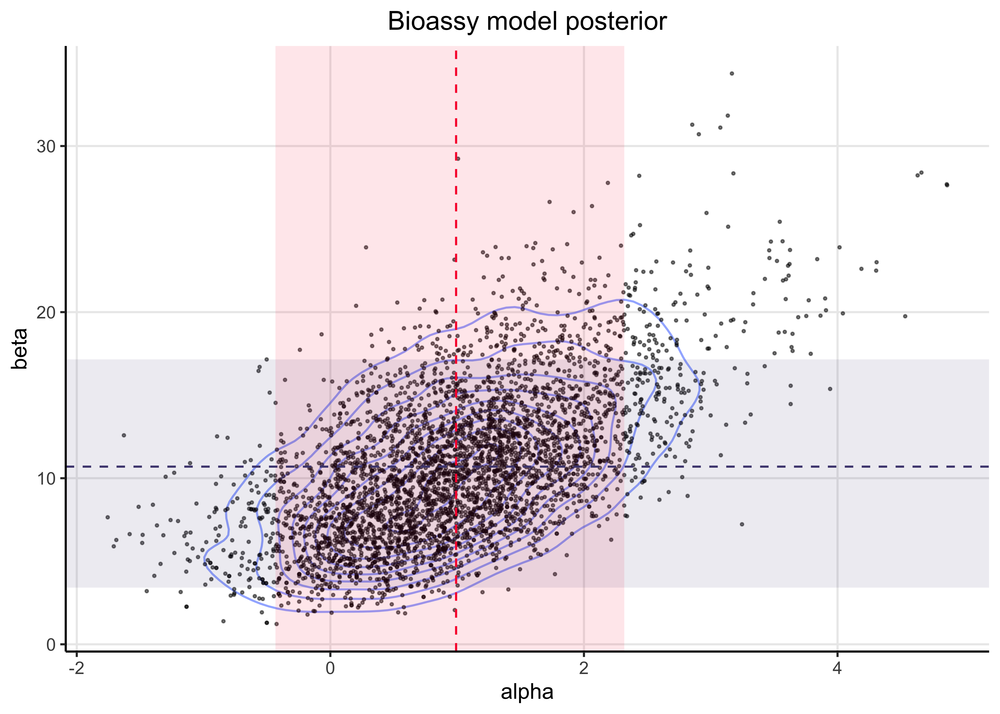

26 Assignment 6
2021-10-07
26.1 Setup
knitr::opts_chunk$set(echo = TRUE, comment = "#>", dpi = 300)
for (f in list.files(here::here("src"), pattern = "R$", full.names = TRUE)) {
source(f)
}
library(rstan)## Loading required package: StanHeaders## Loading required package: ggplot2## rstan (Version 2.21.2, GitRev: 2e1f913d3ca3)## For execution on a local, multicore CPU with excess RAM we recommend calling
## options(mc.cores = parallel::detectCores()).
## To avoid recompilation of unchanged Stan programs, we recommend calling
## rstan_options(auto_write = TRUE)library(tidybayes)
library(bayesplot)## This is bayesplot version 1.8.1## - Online documentation and vignettes at mc-stan.org/bayesplot## - bayesplot theme set to bayesplot::theme_default()## * Does _not_ affect other ggplot2 plots## * See ?bayesplot_theme_set for details on theme settinglibrary(tidyverse)## ── Attaching packages ─────────────────────────────────────── tidyverse 1.3.1 ──## ✓ tibble 3.1.3 ✓ dplyr 1.0.7
## ✓ tidyr 1.1.3 ✓ stringr 1.4.0
## ✓ readr 2.0.1 ✓ forcats 0.5.1
## ✓ purrr 0.3.4## ── Conflicts ────────────────────────────────────────── tidyverse_conflicts() ──
## x tidyr::extract() masks rstan::extract()
## x dplyr::filter() masks stats::filter()
## x dplyr::lag() masks stats::lag()theme_set(
theme_classic() +
theme(
plot.title = element_text(hjust = 0.5),
panel.grid.major = element_line()
)
)
rstan_options(auto_write = TRUE)26.2 Exercise 1. Generalized linear model: Bioassay with Stan
Replicate the computations for the bioassay example of section 3.7 (BDA3) using Stan.
The model is located in “models/assignment06-bioassay.stan”. I have copied it below:
data {
int<lower=0> N; // number of data points
vector[N] x; // dose
int<lower=0> n[N]; // number of animals
int<lower=0> y[N]; // number of deaths
vector[2] mu; // prior on mean of theta
matrix<lower=0>[2, 2] sigma; // prior on covariance matrix of theta
}
parameters {
vector[2] mdl_params;
}
transformed parameters {
vector[N] theta;
theta = mdl_params[1] + mdl_params[2] * x;
}
model {
mdl_params ~ multi_normal(mu, sigma);
y ~ binomial_logit(n, theta);
}26.2.1 1. Write down the model for the bioassay data in Stan syntax.
Use the Gaussian prior as in Assignment 4 and 5, that is:
\[ \begin{bmatrix} \alpha \\ \beta \end{bmatrix} \sim \text{N} (\mu_0, \Sigma_0) \quad \text{where} \quad \mu_0 = \begin{bmatrix} 0 \\ 10 \end{bmatrix} \quad \text{and} \quad \Sigma_0 = \begin{bmatrix} 2^2 & 12 \\ 12 & 10^2 \end{bmatrix} \]
Hint!
You will need Stan functions multi_normal and binomial_logit for implementing the prior and observation model, respectively.
In Stan code, it is easiest to declare a variable (say theta) which is a two-element vector so that the first value denotes \(\alpha\) and latter one \(\beta\).
This is because the multi_normal function that you need for implementing the prior requires a vector as an input.
bioassay <- read_bioassay_data()#> Rows: 4 Columns: 1#> ── Column specification ────────────────────────────────────────────────────────
#> Delimiter: "\t"
#> chr (1): x n y#>
#> ℹ Use `spec()` to retrieve the full column specification for this data.
#> ℹ Specify the column types or set `show_col_types = FALSE` to quiet this message.bioassay_mdl_posterior <- stan(
file = here::here("models", "assignment06-bioassay.stan"),
data = list(
N = nrow(bioassay),
x = bioassay$x,
n = bioassay$n,
y = bioassay$y,
mu = c(0, 10),
sigma = matrix(c(2^2, 12, 12, 10^2), nrow = 2)
)
)#>
#> SAMPLING FOR MODEL 'assignment06-bioassay' NOW (CHAIN 1).
#> Chain 1:
#> Chain 1: Gradient evaluation took 5.7e-05 seconds
#> Chain 1: 1000 transitions using 10 leapfrog steps per transition would take 0.57 seconds.
#> Chain 1: Adjust your expectations accordingly!
#> Chain 1:
#> Chain 1:
#> Chain 1: Iteration: 1 / 2000 [ 0%] (Warmup)
#> Chain 1: Iteration: 200 / 2000 [ 10%] (Warmup)
#> Chain 1: Iteration: 400 / 2000 [ 20%] (Warmup)
#> Chain 1: Iteration: 600 / 2000 [ 30%] (Warmup)
#> Chain 1: Iteration: 800 / 2000 [ 40%] (Warmup)
#> Chain 1: Iteration: 1000 / 2000 [ 50%] (Warmup)
#> Chain 1: Iteration: 1001 / 2000 [ 50%] (Sampling)
#> Chain 1: Iteration: 1200 / 2000 [ 60%] (Sampling)
#> Chain 1: Iteration: 1400 / 2000 [ 70%] (Sampling)
#> Chain 1: Iteration: 1600 / 2000 [ 80%] (Sampling)
#> Chain 1: Iteration: 1800 / 2000 [ 90%] (Sampling)
#> Chain 1: Iteration: 2000 / 2000 [100%] (Sampling)
#> Chain 1:
#> Chain 1: Elapsed Time: 0.042534 seconds (Warm-up)
#> Chain 1: 0.046143 seconds (Sampling)
#> Chain 1: 0.088677 seconds (Total)
#> Chain 1:
#>
#> SAMPLING FOR MODEL 'assignment06-bioassay' NOW (CHAIN 2).
#> Chain 2:
#> Chain 2: Gradient evaluation took 1.4e-05 seconds
#> Chain 2: 1000 transitions using 10 leapfrog steps per transition would take 0.14 seconds.
#> Chain 2: Adjust your expectations accordingly!
#> Chain 2:
#> Chain 2:
#> Chain 2: Iteration: 1 / 2000 [ 0%] (Warmup)
#> Chain 2: Iteration: 200 / 2000 [ 10%] (Warmup)
#> Chain 2: Iteration: 400 / 2000 [ 20%] (Warmup)
#> Chain 2: Iteration: 600 / 2000 [ 30%] (Warmup)
#> Chain 2: Iteration: 800 / 2000 [ 40%] (Warmup)
#> Chain 2: Iteration: 1000 / 2000 [ 50%] (Warmup)
#> Chain 2: Iteration: 1001 / 2000 [ 50%] (Sampling)
#> Chain 2: Iteration: 1200 / 2000 [ 60%] (Sampling)
#> Chain 2: Iteration: 1400 / 2000 [ 70%] (Sampling)
#> Chain 2: Iteration: 1600 / 2000 [ 80%] (Sampling)
#> Chain 2: Iteration: 1800 / 2000 [ 90%] (Sampling)
#> Chain 2: Iteration: 2000 / 2000 [100%] (Sampling)
#> Chain 2:
#> Chain 2: Elapsed Time: 0.038117 seconds (Warm-up)
#> Chain 2: 0.031868 seconds (Sampling)
#> Chain 2: 0.069985 seconds (Total)
#> Chain 2:
#>
#> SAMPLING FOR MODEL 'assignment06-bioassay' NOW (CHAIN 3).
#> Chain 3:
#> Chain 3: Gradient evaluation took 1.5e-05 seconds
#> Chain 3: 1000 transitions using 10 leapfrog steps per transition would take 0.15 seconds.
#> Chain 3: Adjust your expectations accordingly!
#> Chain 3:
#> Chain 3:
#> Chain 3: Iteration: 1 / 2000 [ 0%] (Warmup)
#> Chain 3: Iteration: 200 / 2000 [ 10%] (Warmup)
#> Chain 3: Iteration: 400 / 2000 [ 20%] (Warmup)
#> Chain 3: Iteration: 600 / 2000 [ 30%] (Warmup)
#> Chain 3: Iteration: 800 / 2000 [ 40%] (Warmup)
#> Chain 3: Iteration: 1000 / 2000 [ 50%] (Warmup)
#> Chain 3: Iteration: 1001 / 2000 [ 50%] (Sampling)
#> Chain 3: Iteration: 1200 / 2000 [ 60%] (Sampling)
#> Chain 3: Iteration: 1400 / 2000 [ 70%] (Sampling)
#> Chain 3: Iteration: 1600 / 2000 [ 80%] (Sampling)
#> Chain 3: Iteration: 1800 / 2000 [ 90%] (Sampling)
#> Chain 3: Iteration: 2000 / 2000 [100%] (Sampling)
#> Chain 3:
#> Chain 3: Elapsed Time: 0.036616 seconds (Warm-up)
#> Chain 3: 0.03194 seconds (Sampling)
#> Chain 3: 0.068556 seconds (Total)
#> Chain 3:
#>
#> SAMPLING FOR MODEL 'assignment06-bioassay' NOW (CHAIN 4).
#> Chain 4:
#> Chain 4: Gradient evaluation took 1.3e-05 seconds
#> Chain 4: 1000 transitions using 10 leapfrog steps per transition would take 0.13 seconds.
#> Chain 4: Adjust your expectations accordingly!
#> Chain 4:
#> Chain 4:
#> Chain 4: Iteration: 1 / 2000 [ 0%] (Warmup)
#> Chain 4: Iteration: 200 / 2000 [ 10%] (Warmup)
#> Chain 4: Iteration: 400 / 2000 [ 20%] (Warmup)
#> Chain 4: Iteration: 600 / 2000 [ 30%] (Warmup)
#> Chain 4: Iteration: 800 / 2000 [ 40%] (Warmup)
#> Chain 4: Iteration: 1000 / 2000 [ 50%] (Warmup)
#> Chain 4: Iteration: 1001 / 2000 [ 50%] (Sampling)
#> Chain 4: Iteration: 1200 / 2000 [ 60%] (Sampling)
#> Chain 4: Iteration: 1400 / 2000 [ 70%] (Sampling)
#> Chain 4: Iteration: 1600 / 2000 [ 80%] (Sampling)
#> Chain 4: Iteration: 1800 / 2000 [ 90%] (Sampling)
#> Chain 4: Iteration: 2000 / 2000 [100%] (Sampling)
#> Chain 4:
#> Chain 4: Elapsed Time: 0.035912 seconds (Warm-up)
#> Chain 4: 0.029052 seconds (Sampling)
#> Chain 4: 0.064964 seconds (Total)
#> Chain 4:26.2.2 2. Use \(\widehat{R}\) for convergence analysis.
Report the \(\widehat{R}\) values both for \(\alpha\) and \(\beta\) and discuss the convergence of the chains. Briefly explain in your own words how to interpret the obtained \(\widehat{R}\) values.
Bellow is a table summarizing the results of sampling from the model’s posterior. The \(\widehat{R}\) is stated in the last column of the table. As the values are all around 1.0, this suggests that the chains mixed and converged.
bioassay_mdl_posterior#> Inference for Stan model: assignment06-bioassay.
#> 4 chains, each with iter=2000; warmup=1000; thin=1;
#> post-warmup draws per chain=1000, total post-warmup draws=4000.
#>
#> mean se_mean sd 2.5% 25% 50% 75% 97.5% n_eff Rhat
#> mdl_params[1] 0.95 0.02 0.89 -0.68 0.31 0.90 1.54 2.83 1304 1
#> mdl_params[2] 10.57 0.14 4.60 3.32 7.23 10.06 13.28 20.88 1146 1
#> theta[1] -8.14 0.10 3.47 -16.02 -10.17 -7.69 -5.64 -2.75 1270 1
#> theta[2] -2.22 0.02 1.08 -4.68 -2.87 -2.10 -1.46 -0.41 1982 1
#> theta[3] 0.42 0.02 0.77 -1.00 -0.11 0.39 0.93 2.00 1558 1
#> theta[4] 8.66 0.12 3.97 2.37 5.66 8.23 11.11 17.49 1096 1
#> lp__ -7.11 0.03 0.99 -9.80 -7.49 -6.80 -6.41 -6.15 1410 1
#>
#> Samples were drawn using NUTS(diag_e) at Wed Feb 2 06:44:40 2022.
#> For each parameter, n_eff is a crude measure of effective sample size,
#> and Rhat is the potential scale reduction factor on split chains (at
#> convergence, Rhat=1).\(\widehat{R}\) is a metric for how well the chains mixed and converged using the within- and between-chain variance. If the value is larger than 1, it indicates that the chains have likely not mixed, either due to model misspecification or not running the chains for long enough. It can also be thought of a scaling factor indicating how much greater the estimated variance in the posterior is compared to the real variance caused by the chains not converging.
26.2.3 3. Plot the draws for \(\alpha\) and \(\beta\) (scatter plot) and include this plot in your report
post_df <- bioassay_mdl_posterior %>%
spread_draws(mdl_params[param]) %>%
mutate(param = ifelse(param == 1, "alpha", "beta"))post_df %>%
ggplot(aes(y = fct_rev(param), x = mdl_params)) +
stat_halfeye(.width = c(0.50, 0.89)) +
labs(x = "posterior value", y = "model parameter")
post_point_est <- as_tibble(
bayestestR::point_estimate(bioassay_mdl_posterior)
) %>%
select(param = Parameter, mean = Mean) %>%
filter(str_detect(param, "mdl_params")) %>%
mutate(param = c("alpha", "beta"))
post_hdi <- as_tibble(bayestestR::hdi(bioassay_mdl_posterior, ci = 0.89)) %>%
janitor::clean_names() %>%
select(param = parameter, ci, ci_low, ci_high) %>%
filter(str_detect(param, "mdl_params")) %>%
mutate(param = c("alpha", "beta"))
parameter_post_description <- inner_join(post_point_est, post_hdi, by = "param")
ALPHA_COL <- "#F90039"
BETA_COL <- "#4E477F"
post_df %>%
pivot_wider(names_from = param, values_from = mdl_params) %>%
ggplot(aes(x = alpha, y = beta)) +
geom_density_2d(alpha = 0.5) +
geom_point(size = 0.4, alpha = 0.5) +
geom_rect(
aes(xmin = ci_low, xmax = ci_high),
data = parameter_post_description %>% slice(1),
ymin = -Inf,
ymax = Inf,
alpha = 0.1,
fill = ALPHA_COL,
inherit.aes = FALSE
) +
geom_rect(
aes(ymin = ci_low, ymax = ci_high),
data = parameter_post_description %>% slice(2),
xmin = -Inf,
xmax = Inf,
alpha = 0.1,
fill = BETA_COL,
inherit.aes = FALSE
) +
geom_vline(
xintercept = parameter_post_description$mean[[1]],
color = ALPHA_COL,
linetype = 2
) +
geom_hline(
yintercept = parameter_post_description$mean[[2]],
color = BETA_COL,
linetype = 2
) +
labs(x = "alpha", y = "beta", title = "Bioassy model posterior")
26.2.4 4. To develop the course and provide feedback to Stan developers, we collect information on which Stan setup you used and whether you had any problems in setting it up or using it.
Please report,
- Operating system (Linux, Mac, Windows) or jupyter.cs.aalto.fi? macOS Big Sur (v11.6)
- Programming environment used: R or Python? R
- Interface used: RStan, CmdStanR, PyStan, or CmdStanPy? RStan
- Did you have installation or compilation problems? No troubles.
- Did you try first installing locally, but switched to jupyter.cs.aalto.fi? No.
- In addition of these you can write what other things you found out difficult (or even frustrating) when making this assignment with Stan. No frustrations this time, but I have had some in the past, but the problem was with how I had installed R and not specific to Stan.
sessionInfo()#> R version 4.1.2 (2021-11-01)
#> Platform: x86_64-apple-darwin17.0 (64-bit)
#> Running under: macOS Big Sur 10.16
#>
#> Matrix products: default
#> BLAS: /Library/Frameworks/R.framework/Versions/4.1/Resources/lib/libRblas.0.dylib
#> LAPACK: /Library/Frameworks/R.framework/Versions/4.1/Resources/lib/libRlapack.dylib
#>
#> locale:
#> [1] en_US.UTF-8/en_US.UTF-8/en_US.UTF-8/C/en_US.UTF-8/en_US.UTF-8
#>
#> attached base packages:
#> [1] stats graphics grDevices datasets utils methods base
#>
#> other attached packages:
#> [1] forcats_0.5.1 stringr_1.4.0 dplyr_1.0.7
#> [4] purrr_0.3.4 readr_2.0.1 tidyr_1.1.3
#> [7] tibble_3.1.3 tidyverse_1.3.1 bayesplot_1.8.1
#> [10] tidybayes_3.0.1 rstan_2.21.2 ggplot2_3.3.5
#> [13] StanHeaders_2.21.0-7
#>
#> loaded via a namespace (and not attached):
#> [1] fs_1.5.0 matrixStats_0.61.0 bit64_4.0.5
#> [4] lubridate_1.7.10 insight_0.14.4 httr_1.4.2
#> [7] rprojroot_2.0.2 tensorA_0.36.2 tools_4.1.2
#> [10] backports_1.2.1 bslib_0.2.5.1 utf8_1.2.2
#> [13] R6_2.5.0 DBI_1.1.1 colorspace_2.0-2
#> [16] ggdist_3.0.0 withr_2.4.2 tidyselect_1.1.1
#> [19] gridExtra_2.3 prettyunits_1.1.1 processx_3.5.2
#> [22] bit_4.0.4 curl_4.3.2 compiler_4.1.2
#> [25] rvest_1.0.1 cli_3.0.1 arrayhelpers_1.1-0
#> [28] xml2_1.3.2 isoband_0.2.5 bayestestR_0.11.0
#> [31] labeling_0.4.2 bookdown_0.24 posterior_1.1.0
#> [34] sass_0.4.0 scales_1.1.1 checkmate_2.0.0
#> [37] ggridges_0.5.3 callr_3.7.0 digest_0.6.27
#> [40] rmarkdown_2.10 pkgconfig_2.0.3 htmltools_0.5.1.1
#> [43] highr_0.9 dbplyr_2.1.1 rlang_0.4.11
#> [46] readxl_1.3.1 rstudioapi_0.13 jquerylib_0.1.4
#> [49] farver_2.1.0 generics_0.1.0 svUnit_1.0.6
#> [52] jsonlite_1.7.2 vroom_1.5.4 distributional_0.2.2
#> [55] inline_0.3.19 magrittr_2.0.1 loo_2.4.1
#> [58] Rcpp_1.0.7 munsell_0.5.0 fansi_0.5.0
#> [61] abind_1.4-5 lifecycle_1.0.0 stringi_1.7.3
#> [64] yaml_2.2.1 snakecase_0.11.0 MASS_7.3-54
#> [67] pkgbuild_1.2.0 plyr_1.8.6 grid_4.1.2
#> [70] parallel_4.1.2 crayon_1.4.1 lattice_0.20-45
#> [73] haven_2.4.3 hms_1.1.0 knitr_1.33
#> [76] ps_1.6.0 pillar_1.6.2 codetools_0.2-18
#> [79] clisymbols_1.2.0 stats4_4.1.2 reprex_2.0.1
#> [82] glue_1.4.2 evaluate_0.14 V8_3.4.2
#> [85] renv_0.14.0 RcppParallel_5.1.4 modelr_0.1.8
#> [88] vctrs_0.3.8 tzdb_0.1.2 cellranger_1.1.0
#> [91] gtable_0.3.0 datawizard_0.2.1 assertthat_0.2.1
#> [94] xfun_0.25 janitor_2.1.0 broom_0.7.9
#> [97] coda_0.19-4 ellipsis_0.3.2 here_1.0.1